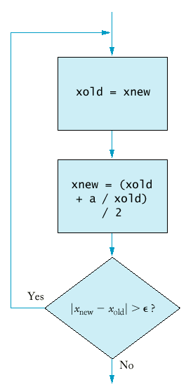

If your status is Single and
if the taxable income is overbut not over the tax is of the amount over $0 $21,450 15% $0 $21,450 $51,900 $3,217.50 + 28% $21,450 $51,900
$11,743 + 31% $51,900
If your status is Married and
if the taxable income is overbut not over the tax is of the amount over $0 $35,800 15% $0 $35,800 $86,500 $5,370.00 + 28% $35,800 $86,500
$19,566.00+ 31% $86,500
if (now.get_hours() == homework.get_hours() &&
now.get_minutes() == homework.get_minutes())
cout << "The homework is due right now!\n";
if (state == "HI" || state == "AK")
shipping_charge = 10.00;
The && and || operators are computed using lazy evaluation.
if (cin.fail() || area < 0) cout << "Input error.\n";
if (r >= 0 && -b / 2 + sqrt(r) >= 0) ...
if (!cin.fail()) quarters = quarters + n;
|
|
|
||||||||||||||||||||||||
| |
|
|
if (!(country == "USA" && state != "AK" && state != "HI"))
shipping_charge = 20.00;
|
not (A and B)
|
is the same as
|
not A or not B
|
|
not (A or B)
|
is the same as
|
not A and not B
|
meansstate != "AK" && state != "HI"
Applying DeMorgan's Law to the original expression yields!(state == "AK") && !(state == "HI")
!(state == "AK" || state == "HI")
i = start;
while (i <= end)
{ . . .
i++;
}
for(i = start; i <= end; i++)
int product = 1;
for (int i = 1; i <= n; i++) product = product * i;

|
Syntax 7.1 : for Statement for (initialization_expression; condition; update_expression) statement
|
do
{ statements
}
while (condition);
do
{ xold = xnew;
xnew = (xold + a / xold) / 2;
}
while (fabs(xnew - xold) > EPSILON);

|
Syntax 7.2: do/while Statement do statement while (condition);
|
print table header
double rate;
for (rate = RATE_MIN; rate <= RATE_MAX;
rate = rate + RATE_INCR)
{ print table row
}
int year;
for (year = YEAR_MIN; year <= YEAR_MAX;
year = year + YEAR_INCR)
{ balance = future_value(initial_balance, rate, year);
cout << setw(10) << balance;
}
cout << "Rate ";
int year;
for (year = YEAR_MIN; year <= YEAR_MAX;
year = year + YEAR_INCR)
{ cout << setw(2) << year << " years";
}
[]
[][]
[][][]
[][][][]
for (int i = 1; i <= n; i++)
{ print triangle row
}
for (int j = 1; j <= i; j++) cout << "[]";
cout << "\n";
for (int i = 1; i <= n; i++)
{ for (int j = 1; j <= i; j++) cout << "[]";
cout << "\n";
}
string word;
while (cin >> word)
{ process word
}
string line;
while (getline(cin, line))
{ process line
}
char ch;
while (cin.get(ch))
{ process ch
}
on a command line. The input instructions no longer expect input from the keyboard but from the file article.txt.words < article.txt
words < article.txt > output.txt
int main()
{ int i;
for (i = 1; i <= 10; i++)
{ int r = rand();
cout << r << "\n";
}
return 0;
}
Time now;
int seed = now.seconds_from(Time(0,0,0));
srand(seed);
int rand_int(int a, int b)
{ return a + rand() % (b - a + 1);
}
double rand_double(double a, double b)
{ return a + (b - a) * rand() * (1.0 / RAND_MAX);
}